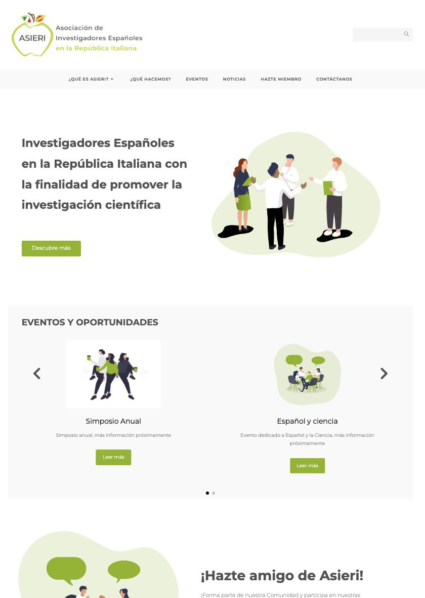
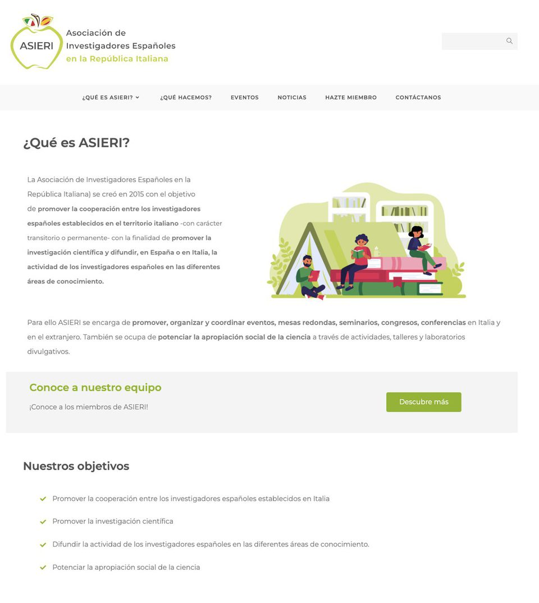
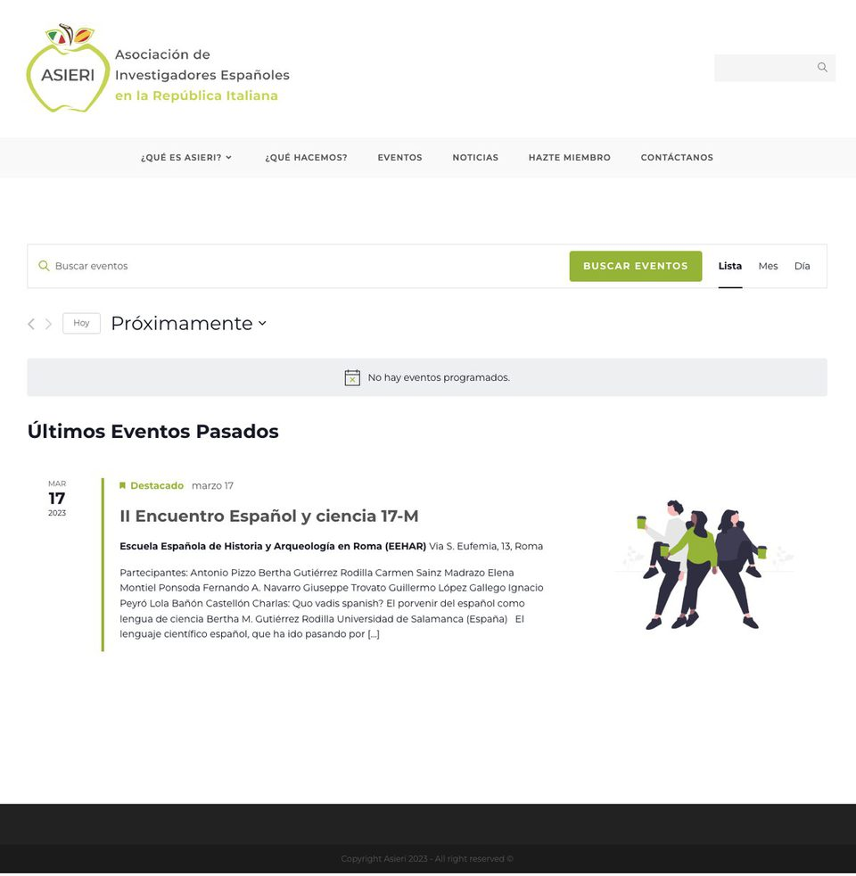
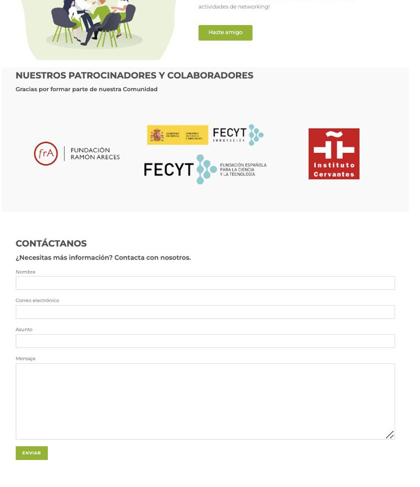

ASIERI
An identity and a digital space for a research community.

The project
ASIERI is an association that promotes cooperation among Spanish researchers working in Italy. I designed the logo, the visual identity and the WordPress site, handling the structure, the pages, the setup, the launch and the maintenance that followed.
The site brought together an introduction to the association, activities, team, news, membership, contacts and a calendar with an events archive. The structure and content management system were designed to let the association update the site on its own.


The illustrations started from images generated with an automated tool. I edited, adapted and brought them into a system coherent with the visual identity; they were not drawn entirely from scratch.
The site was published and maintained after launch, but it is no longer online. The available screenshots document the identity, hierarchies, homepage and events; they don't allow a full reconstruction of the research and process, which is why the project is presented in short form.
